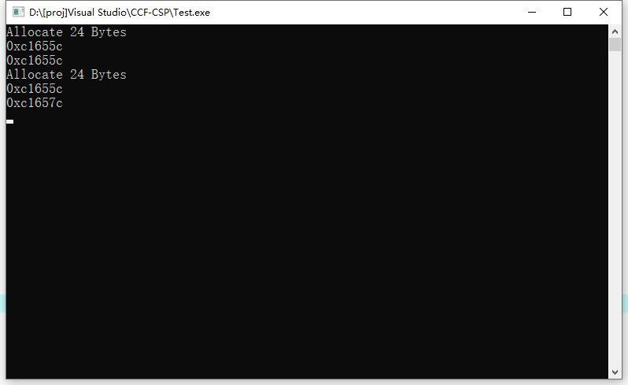
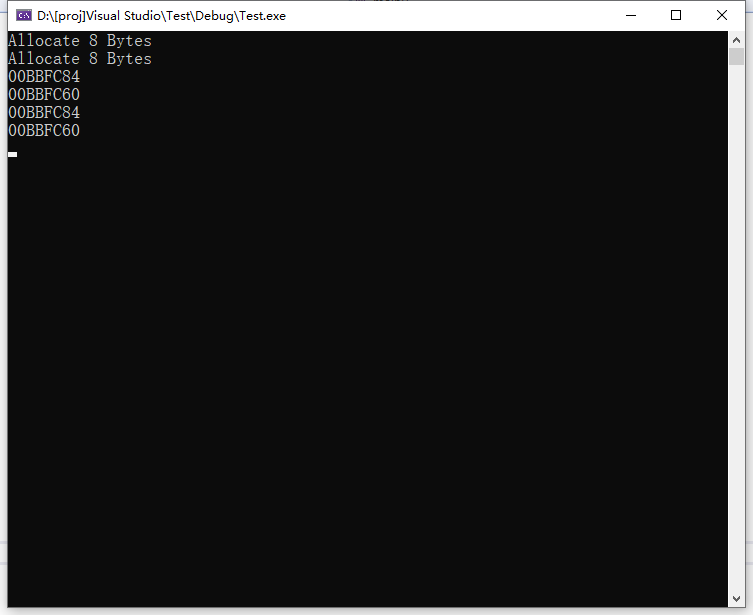

有关C++字符串拷贝的一个小问题
最近面试被问到了一个 C++ 中的小问题，就是如果有字符串 s1 和 s2，将 s1 赋值给 s2 后，它们的内存分布是什么样的。当时感觉可能是共享的，但也不太确定，回来后查阅资料发现结果并不是那么简单。
查阅资料
首先是询问 chatGPT 得到的答案，如下：
如果两个
string对象存储相同的字符串，它们可能会共享同一个内存块，也可能会分别分配自己的内存块。当一个string对象被创建时，它会分配一个新的内存块，并将字符串复制到该内存块中。当第二个string对象被创建时，它可能会使用与第一个string对象相同的内存块，也可能会分配一个新的内存块并将字符串复制到该内存块中。
代码测试
看来又是一个没有标准解决方案的问题，于是我编写了一个简单的程序用来在不同的环境下测试。
1 | void* operator new(size_t count) { |
在上面的程序中，我重载了 operator new 函数来追踪内存的分配，然后先初始化字符串 s1，然后再将 s1 作为 s2 的初始值进行赋值，输出 s1 和 s2 字符串的地址是否是同一块，即内存是否共享，然后我再修改 s2 的首字母（之所以这么做是因为修改 s2 后，由于 s1 与 s2 要保持独立性，因此如果之前内存是共用的，那么在修改之前必定需要为 s2 重新分配内存，否则改变 s2 后 s1 也将改变），再输出查看 s1 和 s2 字符串的地址是否相同。
以下是在不同编译器下程序运行的结果：
g++

MSVC

在 g++ 下未对字符串进行更改时，s1 和 s2 共用一块内存空间，而在修改前才为 s2 分配内存空间。而在 MSVC 下 s1 和 s2 始终没有共用内存空间。可见不同编译器对此情况的处理不尽相同。
在 g++ 中，对字符串拷贝使用了 COW（Copy-On-Write）技术，即当一个 string 对象被复制时，不会立即复制内存块，而是共享同一个内存块，直到其中一个 string 对象要修改字符串内容时，才会复制内存块并分离出一个新的内存块。这样可以避免频繁的内存分配和复制，提高程序的性能。因此，如果两个 string 对象存储相同的字符串，它们可能会共享同一个内存块。
而在 MSVC 中，则不采用 COW 技术，而是每个 string 对象都分配自己的内存块来存储字符串。因此，如果两个 string 对象存储相同的字符串，它们会分别分配自己的内存块。
COW 的缺点
MSVC 之所以不采用 COW 技术，可能是因为 COW 技术会带来一些额外的开销和复杂度。
首先，COW 技术需要额外的代码来实现内存共享和复制，这会带来一定的性能开销和内存占用。在某些情况下，这种开销可能会超过使用动态内存分配的开销。
其次，COW 技术会增加代码的复杂度和难度。由于需要处理内存共享和复制，代码的实现会变得更加复杂和难以维护。此外，COW 技术还可能会带来一些潜在的风险，如线程安全性问题等。
因此，不同的编译器实现可能会根据具体情况来选择是否采用 COW 技术。在一些情况下，COW 技术可以提高性能和效率，但在另一些情况下，它可能会带来额外的开销和复杂度。
 微信
微信 支付宝
支付宝